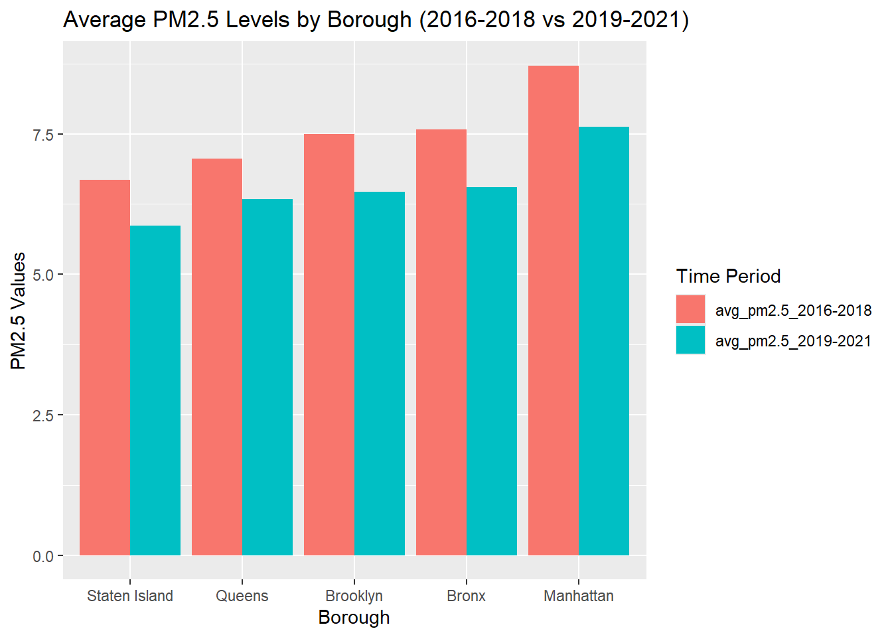
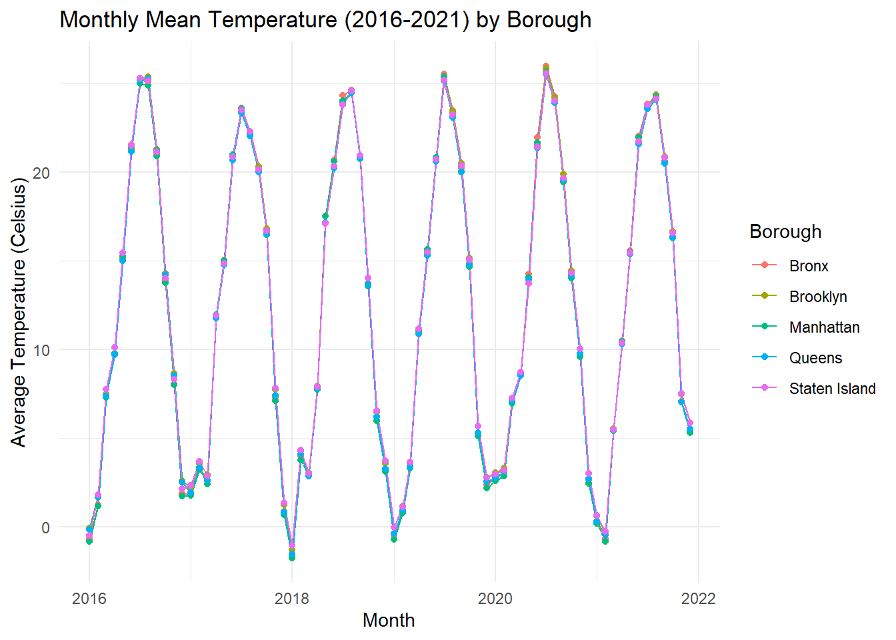

Children’s health and development is impacted by the surrounding environment, particularly in dense urban environments like New York City (NYC). Poor air quality due to urban air pollution can influence and have long-term consequences for child and adolescent respiratory health. The challenges of urban environmental health are further complicated by climate change, particularly through the urban heat island effect, which can increase the risk of heat-related illnesses (Heaviside et al., 2017). Limited research shows that elevated temperatures due to the urban heat island effect are associated with increased emergency department (ED) visits among children (Sheffield et al., 2018).
These health outcomes may be influenced by the availability of green spaces, which can help filter air pollutants and provide cooler areas for shelter from heat. Importantly, environmental health risks disproportionately affect children from low-income neighborhoods and communities of color, where there is often limited access to green spaces and higher exposure to environmental stressors (Corburn et al., 2006).
Through this project, we aim to investigate how these interconnected environmental determinants- air quality, green space availability, and urban heat patterns - vary across NYC boroughs and their potential associations with children’s health, specifically focusing on ED asthma admissions and hospitalizations. We believe that understanding these relationships is crucial for informing urban planning policies and public health initiatives aimed at improving children’s health in New York City.
# Load libraries
library(tidyverse)
library(sf)
library(ggplot2)
library(readxl)The research project integrated multiple datasets to examine the relationship between pediatric asthma outcomes and environmental factors across New York City. Data was sourced from various public health and environmental databases, with each dataset requiring specific cleaning and standardization procedures before merging.
The analysis incorporated five primary datasets from different sources. The pediatric ED admissions and hospitalizations data from 2016-2021 was obtained from the New York State Asthma Dashboard, providing emergency department visit rates and hospitalization rates for children aged 0-17 years at both ZIP code and borough levels. Air quality data, specifically PM2.5 measurements, came from a NYC Kaggle dataset and was available at both borough and Community District levels. Greenspace data through 2021 was sourced from the NYC Open Data portal, providing park properties and greenspace measurements at the borough level. Temperature data for 2016-2021 was extracted from the Open-Meteo historical weather API, offering daily temperature measurements for each borough. The Heat Vulnerability Index data came from NYC Heat Vulnerability Index Rankings, providing vulnerability classifications at the ZIP code level.
Pediatric Asthma Data
The pediatric asthma data cleaning process began with standardizing variable names using the janitor package. The data was filtered to focus on two key health indicators: emergency department visit rates and hospitalization rates. Missing values required special handling, with suppressed data (marked as “s”) and unstable estimates (marked with “*“) converted to NA. Borough names were standardized for consistency across datasets, including converting”Kings” to “Brooklyn”. Separate datasets were created for the 2016-2018 and 2019-2021 time periods.
PM2.5 Data
The PM2.5 data cleaning resulted in several datasets for different analytical purposes. The first dataset calculated borough-level averages for the two time periods of interest. A second dataset maintained community district-level data for visualization purposes. A third dataset preserved UHF42-level data specifically for to analyze asthma outcomes. Throughout the cleaning process, geographic identifiers were standardized, and period averages were calculated for 2016-2018 and 2019-2021.
Greenspace Data
For the greenspace data, borough abbreviations were first recoded to full names for consistency and variables were converted to appropriate types. The acquisition dates were separated into component parts for temporal analysis. The data was then aggregated to calculate total greenspace acreage by borough for each time period. The final dataset included only properties acquired before 2022 to be consistent with the time periods of interest.
Temperature Data
Temperature data processing began with separate extractions for each borough. Date formats were standardized across all borough datasets. Average temperatures were calculated by borough and time period to match the temporal structure of other datasets. The individual borough datasets were then combined into a unified temperature dataset that maintained consistency with the project’s overall geographic and temporal framework.
Heat Vulnerability Index
The Heat Vulnerability Index data required minimal cleaning, focusing on standardizing ZIP code formats and converting the vulnerability index to a factor variable. The final cleaned dataset retained only the essential variables needed for analysis: ZIP code and heat vulnerability classification.
The creation of the final merged dataset followed a careful sequential process to maintain data integrity. The foundation was built by combining the 2016-2018 and 2019-2021 pediatric admissions data. Temperature data was then merged using borough and time period as keys, followed by PM2.5 data using the same keys. Greenspace measurements were incorporated next, again matching on borough and time period. The Heat Vulnerability Index was the final addition, merged using ZIP code as the key.
Variable types were subsequently standardized, with categorical variables converted to factors and rates maintained as numeric values. Incomplete and missing records were removed to ensure data quality. Separate datasets were created for emergency department visits and hospitalizations for focused analysis on different pediatric asthma outcomes. Borough-level average rates were calculated to enable analysis at multiple geographic scales.
The resulting merged dataset, saved as “NYC_total.csv”, represents a comprehensive integration of health outcomes, environmental measures, and heat vulnerability. It includes emergency department visits and hospitalization rates, PM2.5 levels, temperature measurements, heat vulnerability, and greenspace acreage. Geographic identifiers at both ZIP code and borough levels enable spatial analysis, while time period indicators allow for temporal comparisons. Borough-level averages provide geographic information relevant to the planned analysis.
This final dataset is sufficient for addressing our research aims specific to analyzing pediatric asthma outcomes in relation to environmental factors and heat vulnerability across New York City’s boroughs and ZIP codes for the periods 2016-2018 and 2019-2021.
Our exploratory analysis examined relevant environmental and health variables for pediatric asthma across New York City’s five boroughs between 2016-2018 and 2019-2021. We explored two health indicators: pediatric asthma emergency department (ED) visits and pediatric asthma hospitalizations. We further examined three environmental factors of interest to our research aims, specifically distributions of fine particulate matter (PM2.5), greenspace, and temperature patterns across New York City.
# Load PM data
particulate_matter =
read_csv("data/Air_Quality_20231208.csv")
# Produce tidied PM dataset for analysis
tidy_analysis_pm =
particulate_matter |>
janitor::clean_names() |>
mutate(
unique_id = as.character(unique_id),
indicator_id = as.character(indicator_id),
geo_join_id = as.character(geo_join_id)) |>
filter(name == "Fine particles (PM 2.5)") |>
filter(time_period %in% c("Annual Average 2016", "Annual Average 2017",
"Annual Average 2018", "Annual Average 2019",
"Annual Average 2020", "Annual Average 2021")) |>
filter(geo_type_name == "Borough") |>
select(-unique_id, -indicator_id, -start_date) |>
rename(borough = geo_place_name) |>
mutate(
period = case_when(
time_period %in% c("Annual Average 2016", "Annual Average 2017", "Annual Average 2018") ~ "2016-2018",
time_period %in% c("Annual Average 2019", "Annual Average 2020", "Annual Average 2021") ~ "2019-2021"
)
) |>
group_by(borough, period) |>
summarize(
average_pm2.5 = mean(data_value, na.rm = TRUE),
.groups = "drop"
) |>
pivot_wider(
names_from = period,
values_from = average_pm2.5,
names_prefix = "avg_pm2.5_"
)# Plot of average PM2.5 levels by borough between 2016-2018 and 2019-2021
tidy_analysis_pm |>
pivot_longer(cols = -borough, names_to = "Year_Group", values_to = "PM2.5") |>
mutate(borough = factor(borough, levels = unique(borough[order(PM2.5)]))) |>
ggplot(aes(x = borough, y = PM2.5, fill = Year_Group)) +
geom_bar(position = "dodge", stat = "identity") +
labs(
title = "Average PM2.5 Levels by Borough (2016-2018 vs 2019-2021)",
x = "Borough",
y = "PM2.5 Values",
fill = "Year Group"
) 
Figure 3. Average PM.25 levels across boroughs: 2016-2018 vs 2019-2021
# Print PM2.5 Summary
tidy_analysis_pm_diff <-
tidy_analysis_pm |>
mutate(
`avg_pm2.5_2016-2018` = round(`avg_pm2.5_2016-2018`, 3),
`avg_pm2.5_2019-2021` = round(`avg_pm2.5_2019-2021`, 3),
pm2.5_difference = round(`avg_pm2.5_2016-2018` - `avg_pm2.5_2019-2021`, 3)
)
knitr::kable(tidy_analysis_pm_diff, col.names = c("Borough", "Average PM2.5 (2016-2018)", "Average PM2.5 (2019-2021)", "Difference in PM2.5 Levels"))| Borough | Average PM2.5 (2016-2018) | Average PM2.5 (2019-2021) | Difference in PM2.5 Levels |
|---|---|---|---|
| Bronx | 7.573 | 6.553 | 1.020 |
| Brooklyn | 7.490 | 6.470 | 1.020 |
| Manhattan | 8.717 | 7.627 | 1.090 |
| Queens | 7.060 | 6.337 | 0.723 |
| Staten Island | 6.683 | 5.870 | 0.813 |
Table 3. Borough Average ED Visit Rates per 10,000 Children (aged 0-17 Years)
Fine particulate matter (PM2.5) concentrations show distinct spatial patterns that partially align with asthma outcomes. Manhattan, despite not having the highest asthma rates, consistently recorded the highest PM2.5 concentrations (8.72 μg/m³ in 2016-2018, decreasing to 7.63 μg/m³ in 2019-2021). This interesting divergence from reported asthma ED visit and hospitalization rates suggests that while air quality is a significant factor, other environmental and social determinants influence pediatric asthma outcomes in New York City.
# Load NYC geospatial data
geography =
read_excel("data/geoid_borough_name_nyc.xlsx") |>
rename(geo_join_id = ID) |>
mutate(geo_join_id =
as.character(geo_join_id))
# Tidy dataset for geospatial PM analysis
tidy_uhf42_pm =
particulate_matter |>
janitor::clean_names() |>
mutate(
unique_id = as.character(unique_id),
indicator_id = as.character(indicator_id),
geo_join_id = as.character(geo_join_id)) |>
filter(name == "Fine particles (PM 2.5)") |>
filter(time_period %in% c("Annual Average 2016", "Annual Average 2017",
"Annual Average 2018", "Annual Average 2019",
"Annual Average 2020", "Annual Average 2021")) |>
filter(geo_type_name == "UHF42") |>
select(-unique_id, -indicator_id, -start_date) |>
mutate(
period = case_when(
time_period %in% c("Annual Average 2016", "Annual Average 2017", "Annual Average 2018") ~ "2016_2018",
time_period %in% c("Annual Average 2019", "Annual Average 2020", "Annual Average 2021") ~ "2019_2021"
)
) |>
group_by(geo_place_name, geo_join_id, period) |>
summarize(
average_pm2.5 = mean(data_value, na.rm = TRUE),
.groups = "drop"
) |>
pivot_wider(
names_from = period,
values_from = average_pm2.5,
names_prefix = "avg_pm2.5_"
)
# Load shapefiles map for UHF data
uhf42_map <- st_read("data/UHF_42_DOHMH_2009.shp", quiet = TRUE)
tidy_uhf42_pm <-
tidy_uhf42_pm |>
rename(UHFCODE = geo_join_id) |>
mutate(
UHFCODE = as.double(UHFCODE))
# Combine geospatial data and PM data
map_uhf42 <-
uhf42_map |>
left_join(tidy_uhf42_pm, by = "UHFCODE") |>
pivot_longer(cols = starts_with("avg_pm2.5_"),
names_to = "time_period",
values_to = "avg_pm2.5")
# Produce heat map
heat_map_pm2.5 <- ggplot() +
geom_sf(data = map_uhf42, aes(fill = avg_pm2.5)) +
facet_wrap(~time_period, ncol = 2) +
scale_fill_viridis_c(option = "plasma", na.value = "grey50") +
labs(
title = "PM2.5 (ug/m3) Levels by UHF42 Neighborhood",
fill = "PM2.5"
) +
theme_minimal() +
theme(
plot.title = element_text(size = 12),
legend.position = "right",
legend.key.height = unit(2, "cm"),
panel.grid = element_blank(),
axis.text = element_blank(),
axis.ticks = element_blank(),
axis.title = element_blank()
)
# Show heat map for PM2.5
heat_map_pm2.5Figure 4. PM2.5 levels by United Hospital Fund (UHF) Neighborhoods
The uniform reduction in PM2.5 levels across boroughs between the two periods (particularly the identical 1.02 μg/m³ reduction in both the Bronx and Brooklyn) suggests city-wide factors, possibly including urban policy interventions or COVID-19-related activity reductions, affected air quality improvements. Based on UHF42 neighborhood-level analysis, Midtown Manhattan has consistently high PM2.5 levels across both time periods. The PM2.5 hotspots in Midtown Manhattan suggest urban factors, such as traffic patterns, industrial activities and building density, likely play a key role in determining local air quality.
# Load greenspace data
greenspace_clean = read_csv("./data/Parks_Properties_20241126.csv", na = c("NA", ".", "")) |>
janitor::clean_names() |>
mutate(
borough = case_match(borough, #renamed borough according to data dictionary
"R" ~ "Staten Island",
"Q" ~ "Queens",
"X" ~ "Bronx",
"B" ~ "Brooklyn",
"M" ~ "Manhattan"),
typecategory = as.factor(typecategory), #converted char variables into factors
borough = as.factor(borough)) |>
separate(acquisitiondate, into = c("year", "month", "day"), sep = "-") |>
select(year, borough, acres, typecategory) |>
filter(year < 2022 | is.na(year))# Load 2016-2018 dataset
dataset1_gs = greenspace_clean |>
filter(year < 2019 | is.na(year)) |>
group_by(year, borough) |>
summarise(avg_acres_per_yr_bor = mean(acres, na.rm = TRUE), .groups = "drop")
dataset1_gs_calc = dataset1_gs |>
group_by(borough) |>
summarise(acres_sum = sum(avg_acres_per_yr_bor, na.rm = TRUE), .groups = "drop") |>
mutate(year_group = "2016-2018")
# Load 2019-2021 dataset
dataset2_gs = greenspace_clean |>
filter(year < 2022 | is.na(year)) |>
group_by(year, borough) |>
summarise(avg_acres_per_yr_bor = mean(acres, na.rm = TRUE), .groups = "drop")
dataset2_gs_calc = dataset2_gs |>
group_by(borough) |>
summarise(acres_sum = sum(avg_acres_per_yr_bor, na.rm = TRUE), .groups = "drop") |>
mutate(year_group = "2019-2021")
# Combine datasets
total_acres = bind_rows(dataset1_gs_calc, dataset2_gs_calc)
# Total acres dataset
Greenspace_data = total_acres |>
pivot_wider(names_from = year_group,
values_from = acres_sum)
# Produce plot of greenspace distribution across NYC boroughs
ggplot(total_acres, aes(x = reorder(borough, acres_sum), y = acres_sum, fill = year_group)) +
geom_bar(stat = "identity", position = "dodge", alpha = 0.7) +
labs(x = "Borough", y = "Greenspace (Total Acres)", title = "Greenspaces Across Borough by Year Group") +
theme_minimal()Figure 5. Greenspace distribution across boroughs: 2016-2018 vs 2019-2021
| Borough | 2016-2018 | 2019-2021 | Difference |
|---|---|---|---|
| Staten Island | 2812.520 | 3071.240 | 258.720 |
| Bronx | 1130.236 | 1249.861 | 119.625 |
| Queens | 2171.277 | 2182.771 | 11.494 |
| Brooklyn | 1794.986 | 1795.942 | 0.956 |
| Manhattan | 1715.288 | 1715.633 | 0.345 |
Table 4. Difference in Greenspace distribution across boroughs
Our analysis highlights substantial inequities in greenspace access across New York City. Staten Island’s dominance in both total coverage (approximately 3,000 acres) and increased greenspace (258.72 acres) stands in contrast to the Bronx, which showed the lowest coverage despite a modest increase of 119.625 acres. This apparent inverse relationship between greenspace availability and asthma rates - with the Bronx having the highest asthma ED visit and hospitalization rates and lowest greenspace coverage - suggests a potential environmental health relationship warranting further investigation.
# Calculate mean acres for each type category across all years
types_nyc = greenspace_clean |>
select(-borough) |>
group_by(typecategory) |>
summarise(acres_tp = mean(acres, na.rm = TRUE), .groups = "drop")
# Process data for 2016-2018 period
type1A = greenspace_clean |>
filter(year < 2019 | is.na(year)) |>
group_by(year, borough, typecategory) |>
summarise(avg_acres_per_yr_bor = mean(acres, na.rm = TRUE), .groups = "drop")
# Calculate total acres by borough and type for 2016-2018
type1B = type1A |>
group_by(borough, typecategory) |>
summarise(acres_sum = sum(avg_acres_per_yr_bor, na.rm = TRUE), .groups = "drop") |>
mutate(year_group = "year1") #2016-2018
# Process data for 2019-2021 period
type2A = greenspace_clean |>
filter(year < 2022 | is.na(year)) |>
group_by(year, borough, typecategory) |>
summarise(avg_acres_per_yr_bor = mean(acres, na.rm = TRUE), .groups = "drop")
# Calculate total acres by borough and type for 2019-2021
type2B = type2A |>
group_by(borough, typecategory) |>
summarise(acres_sum = sum(avg_acres_per_yr_bor, na.rm = TRUE), .groups = "drop") |>
mutate(year_group = "year2") #2019-2021
# Combine both time periods and calculate total acres by type
binded = bind_rows(type1B, type2B) |>
group_by(typecategory, year_group) |>
summarise(acres_total = sum(acres_sum, na.rm = TRUE))
# Create bar plot comparing greenspace types between periods
binded |>
mutate(year_group = case_match(year_group,
"year1" ~ "2016-2018",
"year2" ~ "2019-2021")) |>
ggplot(aes(x = reorder(typecategory, acres_total), y = acres_total, fill = year_group)) +
geom_bar(stat = "identity", position = "dodge", width = 0.6) +
labs(x = "Greenspace Types", y = "Total Acres", title = "Total Acres of NYC Greenspace by Type and Year Group") +
theme_minimal() +
theme(axis.text.x = element_text(angle = 45, vjust = 1, hjust = 1))Figure 6. Greenspace types across boroughs: 2016-2018 vs 2019-2021
| Greenspace Type | 2016-2018 | 2019-2021 | Difference |
|---|---|---|---|
| Neighborhood Park | 910.009 | 1169.625 | 259.616 |
| Managed Sites | 483.304 | 602.398 | 119.094 |
| Nature Area | 3084.626 | 3117.486 | 32.860 |
| Undeveloped | 190.171 | 191.357 | 1.186 |
| Waterfront Facility | 2277.161 | 2277.691 | 0.530 |
| Garden | 17.201 | 17.600 | 0.399 |
| Playground | 137.855 | 138.154 | 0.299 |
Table 5. Difference in greenspace coverage across boroughs: 2016-2018 vs 2019-2021
The analysis of greenspace types suggests varying priorities in green developments across New York City. The substantial expansion of neighborhood parks (259.617 acres) and managed sites (119.095 acres) indicates focused efforts to increase accessible green spaces. However, the minimal changes in smaller categories like gardens and plazas suggests that large-scale greenspace development may not adequately address neighborhood-level access needs, which could be more meaningful for boroughs like the Bronx.
| Borough | Highest | Second Highest | Third Highest |
|---|---|---|---|
| Bronx | Flagship Park (1532.62) | Parkway (585.51) | Nature Area (312.15) |
| Brooklyn | Community Park (1487.77) | Parkway (827.95) | Flagship Park (571.31) |
| Queens | Flagship Park (1631.46) | Waterfront Facility (1093.79) | Community Park (973.11) |
| Manhattan | Community Park (1098.39) | Flagship Park (1094.31) | Neighborhood Park (207.73) |
| Staten Island | Nature Area (1690.97) | Community Park (1371.96) | Flagship Park (760.79) |
Table 6. Top 3 Greenspace Types (Total Acres) Across Boroughs
While the Bronx contains major Flagship Parks and Parkways among its largest green spaces, these types of spaces may not provide the same respiratory health benefits as smaller, more accessible neighborhood parks distributed throughout residential areas where children live and play. Despite the expansion of neighborhood parks (259.617 acres) and managed sites (119.095 acres) across the city, the concentration of greenspace in large, potentially less accessible formats like Flagship Parks may limit their protective effects against childhood asthma. Staten Island’s lower asthma rates and large Nature Area (1690.97 acres) present an interesting contrast, though this association may reflect broader factors such as lower population density or better air quality rather than the specific type of greenspace.
# Load and clean raw temperature data for each borough
manhattan = read_csv("data/manhattan.csv",skip = 3) |>
mutate(Borough = "Manhattan") |>
janitor::clean_names()
bronx = read_csv("data/bronx.csv",skip = 3) |>
mutate(Borough = "Bronx") |>
janitor::clean_names()
brooklyn = read_csv("data/brooklyn.csv",skip = 3) |>
mutate(Borough = "Brooklyn") |>
janitor::clean_names()
queens = read_csv("data/queens.csv",skip = 3) |>
mutate(Borough = "Queens") |>
janitor::clean_names()
staten_island = read_csv("data/staten_island.csv",skip = 3) |>
mutate(Borough = "Staten Island") |>
janitor::clean_names()
# Combine temperature data from all boroughs and format dates/times
all_temp = bind_rows(manhattan, bronx, brooklyn, queens, staten_island) |>
mutate(borough = as.factor(borough)) |>
mutate(date = as.Date(time, format = "%d/%m/%Y")) |>
select(time:temperature_2m_mean, borough, date) |>
mutate(years = year(date)) |>
mutate(months = as.Date(paste0(format(date, "%Y-%m"), "-01"), format = "%Y-%m-%d"))
# Calculate average temperatures by borough and year group
all_temp_borough = all_temp |>
mutate(date = as.Date(time, format = "%d/%m/%Y")) |>
mutate(data_years = ifelse(year(date) %in% 2016:2018, "2016-2018", "2019-2021")) |>
select(temperature_2m_max:data_years) |>
group_by(data_years, borough) |>
summarise(avg_temperature = mean(temperature_2m_mean, na.rm = TRUE))# Produce plot of monthly Mean temperature
all_temp_month = all_temp |>
group_by(months, borough) |>
summarise(avg_month = mean(temperature_2m_mean, na.rm = TRUE))
ggplot(all_temp_month, aes(x = months, y = avg_month, color = borough)) +
geom_line() +
geom_point() +
labs(
title = "Monthly Mean Temperature (2016-2021) by Borough",
x = "Month",
y = "Average Temperature (Celsius)",
color = "Borough"
) +
theme_minimal()
Figure 7. Monthly Mean Temperature across NYC Boroughs (2016-2021)
Temperature analysis shows differences across New York City’s boroughs between 2016 and 2021. While seasonal variations show consistent patterns across boroughs (peaks around 25°C and lows near 0°C), the slight but persistent temperature differences between boroughs suggest varying urban heat island effects.
# Mean temperature data
mean_temp_year = all_temp |>
group_by(years, borough) |>
summarize(
high_temp = mean(temperature_2m_max, na.rm = TRUE),
low_temp = mean(temperature_2m_min, na.rm = TRUE),
mean_temp = mean(temperature_2m_mean, na.rm = TRUE)
) |>
arrange(years, borough)
# Produce average temperature table with rounded values
mean_temp_year |>
select(years, borough, mean_temp) |>
mutate(mean_temp = round(mean_temp, 3)) |>
pivot_wider(
names_from = borough,
values_from = mean_temp
) |>
knitr::kable(col.names = c("Years", "Bronx", "Brooklyn", "Manhattan", "Queens", "Staten Island"))| Years | Bronx | Brooklyn | Manhattan | Queens | Staten Island |
|---|---|---|---|---|---|
| 2016 | 12.499 | 12.759 | 12.393 | 12.662 | 12.707 |
| 2017 | 12.231 | 12.402 | 12.153 | 12.144 | 12.393 |
| 2018 | 12.085 | 12.118 | 11.933 | 11.950 | 12.142 |
| 2019 | 11.981 | 12.124 | 11.851 | 11.860 | 12.098 |
| 2020 | 12.866 | 12.955 | 12.683 | 12.725 | 12.855 |
| 2021 | 12.651 | 12.766 | 12.566 | 12.548 | 12.755 |
Table 7. Mean Temperature across NYC Boroughs (2016-2021)
Brooklyn and Staten Island’s slightly consistently higher average temperatures, compared to Manhattan’s lower averages, may reflect differences in building density and greenspace coverage.
The observed warming trend between periods (0.2-0.3°C increase) aligns with broader climate change patterns but may also reflect the effects of localized urban developments. This warming pattern, combined with limited greenspace in asthma hotspot areas like the Bronx, suggests potential intersecting environmental health challenges.
While our exploratory analysis examined temperature patterns across NYC boroughs, our final modeling approach ultimately employed the Heat Vulnerability Index (HVI) rather than raw temperature measurements. This decision was driven by several key considerations. First, our exploratory analysis revealed that temperature patterns were very similar across all boroughs, with only slight variations in average temperatures (0.2-0.3°C differences). This uniformity in temperature measurements meant it would not be easy to explain the substantial geographic variations we observed in asthma outcomes. Second, HVI would be able to represent neighborhood-level variations in heat vulnerability that raw temperature data alone would unlikely show based on the data obtained.
Instead, we opted to use the Heat Vulnerability Index, which provides a more comprehensive measure of the impact of heat stress on different communities. The HVI incorporates not only environmental factors but also crucial socio-demographic characteristics that influence a community’s resilience to heat stress. These include language vulnerability (relevant for NYC’s diverse neighborhoods), socioeconomic vulnerability, environmental and urban vulnerability, and elderly isolation - factors that may indirectly affect childhood asthma outcomes through the social determinants of health, including housing quality, access to cooling infrastructure, and overall community resources.
Corburn, J., Osleeb, J., & Porter, M. (2006). Urban asthma and the neighbourhood environment in New York City. Health & place, 12(2), 167-179.
Heaviside, C., Macintyre, H., & Vardoulakis, S. (2017). The urban heat island: implications for health in a changing environment. Current environmental health reports, 4, 296-305.
Sheffield, P. E., Herrera, M. T., Kinnee, E. J., & Clougherty, J. E. (2018). Not so little differences: variation in hot weather risk to young children in New York City. Public health, 161, 119–126. https://doi.org/10.1016/j.puhe.2018.06.004